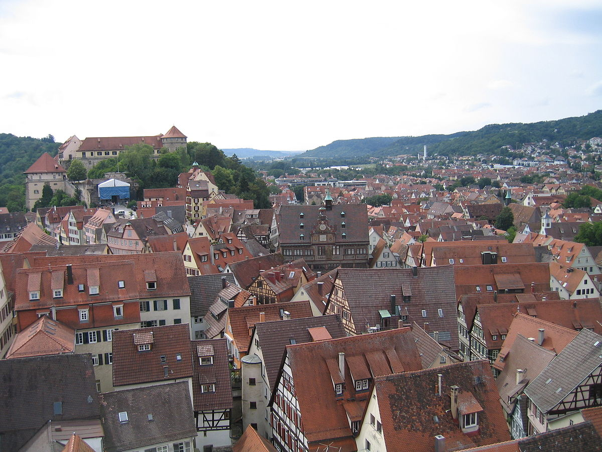
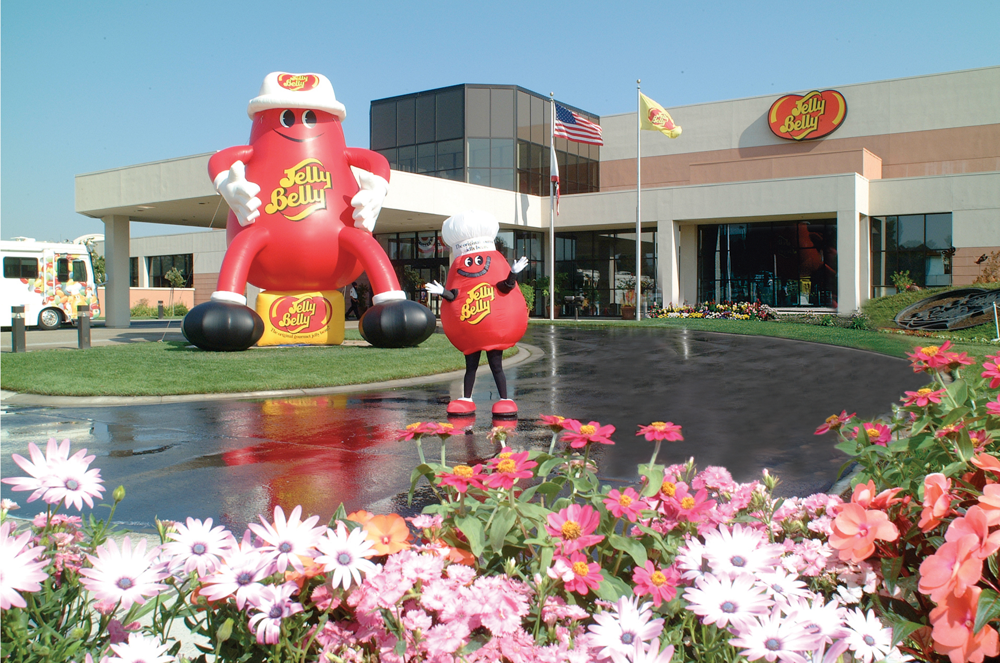
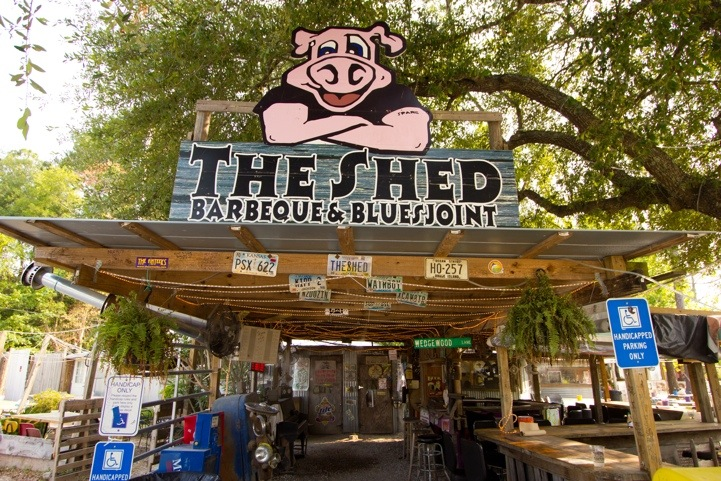
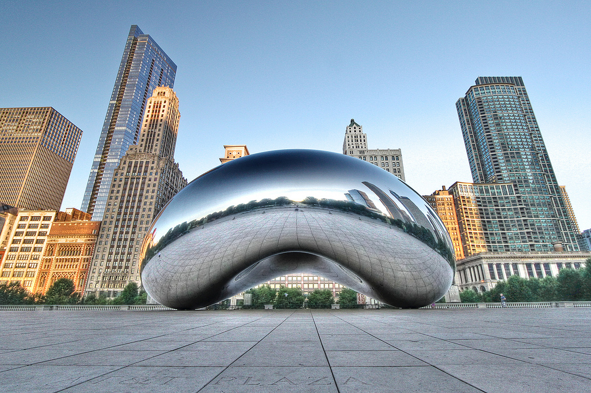

Germany
My adventure begins in 2002 when my husband and I packed up all our belongings and moved to Ramstein, Germany. As a kid, I had moved around about every four years so I was use to packing and moving, but I had never lived outside the country before. I was excited and scared and ready to start my life. The first thing I noticed about Germany is that the scenery reminded me of Disney cartoons. The house we moved into was in a small village and still had cobblestone roads in some areas. The Townspeople were always outside, walking to stores, gardening, or visiting with neighbors. It was like we lived in the town from the movie Beauty and the Beast. On the weekends we would explore the surrounding areas and visit nearby castles. It did not take long for us to become accustomed to German culture. We lived there for four years. We traveled often to explore nearby European countries and could not help but be amazed what a small world it was after all.
California
In 2006 we moved back to the states, specifically, California. Since I had recently welcomed my first daughter into this world, I was grateful to be stateside. I figured it would make it easier to visit family. In reality, most of our family is in Louisiana so traveling back and forth between the two states seemed time-consuming (especially since in Germany, we could be in France within 4 hours traveling by car or 30 minutes by air). That's when I realized that when living in the states, it is not a small world after all. Our home was in a town in between San Fransico and Sacramento so those were the first cities we explored. We also traveled to Napa Valley and did a train tour of the region. Our favorite (or at least most visited) place is California was the Jelly Belly Factory. My daughter loved going on the tour and laughing at her dad because everyone had to wear silly hats to go on the tour. Afterward, we would buy Jelly Flops (these are the jellybeans that were not shaped perfectly so they would sell them at a discounted price). At the end of four years, we were ready to discover a new place and excited to see where our next chapter would take place.
Mississippi
When I found out we were going to Mississippi in 2010 I could not have been happier. I had just had my second daughter and being closer to family sounded wonderful. We were only a short 3 hours away from our hometown in Louisiana. This was close enough for us to go visit on the weekends if we wanted to and far enough away that family members would always call before they came over. The area we lived in was wonderful as well. We lived near the beach by the Gulf of Mexico so every day when I drove to work I would see the beautiful beach scenery. It was a delightful way to start and end the day. The schools were also top-notch because of the money coming in from the casinos. The best part about Mississippi was to food. There were so many great southern restaurants around I'm surprised I did not gain a million pounds. The most popular BBQ restaurant was The Shed Barbeque and Blues Joint. It did not look like much on the outside (I will admit I was skeptical the first time I saw it) but let me tell you, they know how to cook. Life was perfect in Mississippi so I was a little disappointed after four years when I found out my family and I would be moving to Illinois.
Illinois
We found our home in Illinois in 2015. I am still trying to get used to the snow but at least I get to see all four seasons. Although most people think of big cities or skyscrapers when they think of Illinois, we actually live in an area that is mostly populated by cornfields. Somedays when I am sitting outside drinking my coffee and listening to the wind rustling over the corn stalks in the fields, I can close my eyes and imagine that I'm listening to the ocean waves. My family and I have visited some of the big cities in Illinois including Chicago. Our favorite attraction is Cloudgate, aka the Bean. It always makes us think of the Jelly Belly Factory in California. It's hard to believe we have been here already for four years but last month we found out our family will be moving again. This time to Washington DC.
Washington DC
And so the adventure continues. I am thrilled to be going to Washington DC and explore our nation's capital. I have been warned that the traffic will be unbelievably bad but no place is perfect. I honestly enjoy traveling and exploring different areas and can't image staying in one place for too long.